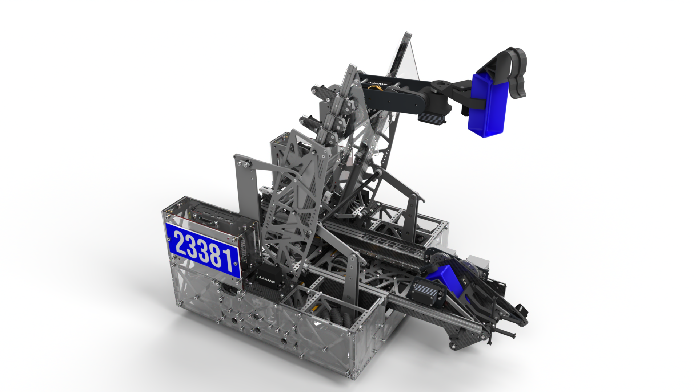
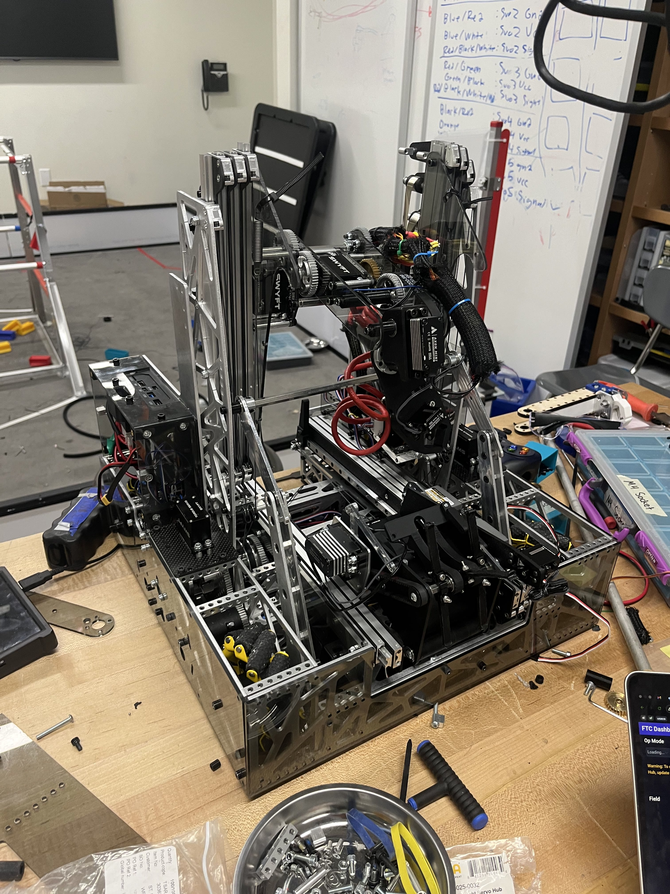

FTC robotics / full-system engineering
Competition robot built for fast cycles and reliable autonomous motion.
Lead hardware and software developer for a full FTC robot system: mechanism design, sensor integration, countersprung slides, and custom pathing.

Robot overview
System highlights.
Mecanum chassis + PTO
Active intake + transfer
Outtake + lift
Sensors + automation

Build process
From CAD to competition hardware.
Custom plates, carbon fiber slides, dense packaging, wiring, and mechanism iteration.
OM NI PUR SUIT
Custom autonomous pathing for fast movement, clean stopping, and rerouting when a planned route becomes blocked.
Velocity-scaled lookahead chooses the next reachable target.
Correction reduces drift during fast turns and strafing.
Kinematic prediction starts slowing before overshoot.
Blocked waypoints can be removed and a new route selected.
Hardware highlight
Counterspring slides reduced load while preserving speed.
Staged constant-force springing counterbalanced the changing moving mass of continuous slides, reducing load while keeping lift motion fast.
- Carbon fiber slide structure balanced rigidity and weight.
- Staged spring forces matched the lift’s changing extension load.
- Mirrored spring placement helped distribute forces cleanly.